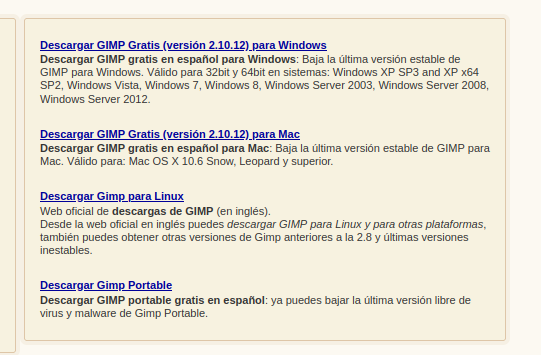
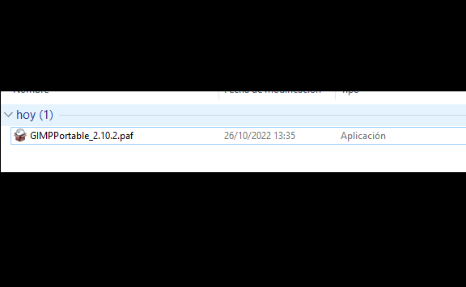
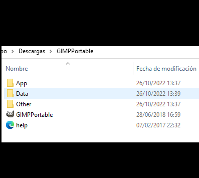
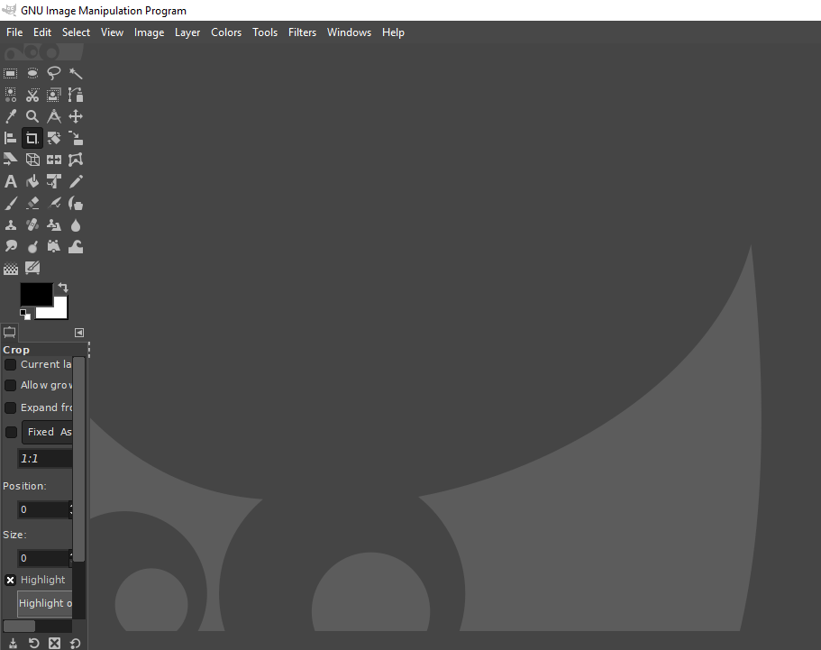

1ª Descargamos el
gimp portable desde
la web oficial

2ª Se nos descargara
un paquete que al ejecutarlo
procesará una carpeta con lo necesario
para usar el gimp

3ª Este es el resultado

3ª Ejecutaremos el gimp
y nos saldrá la mesa
de trabajo para empezar a usar
el editor de imágenes